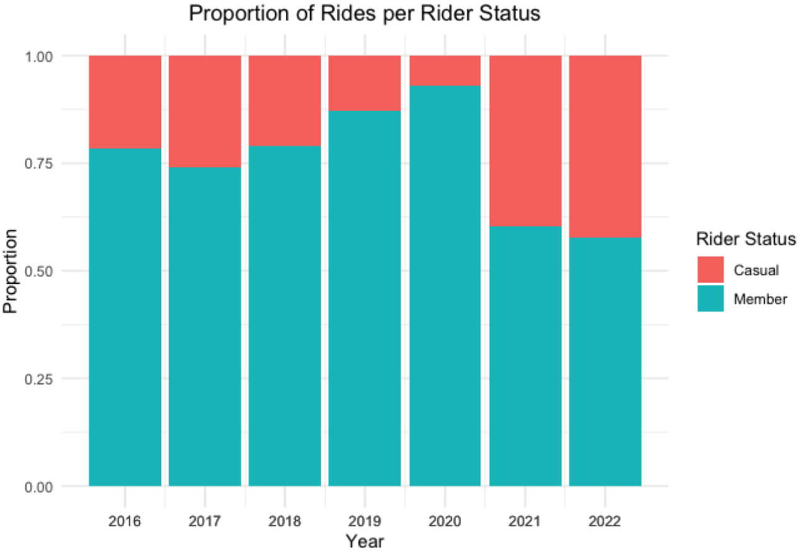
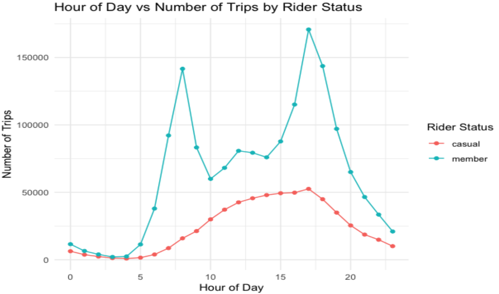
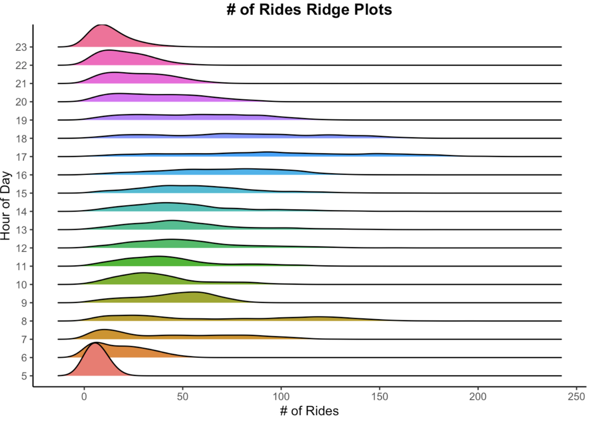
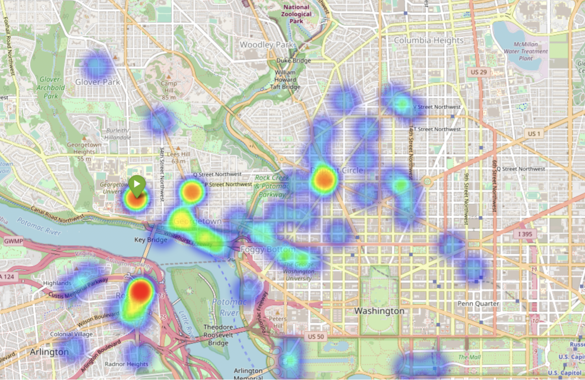
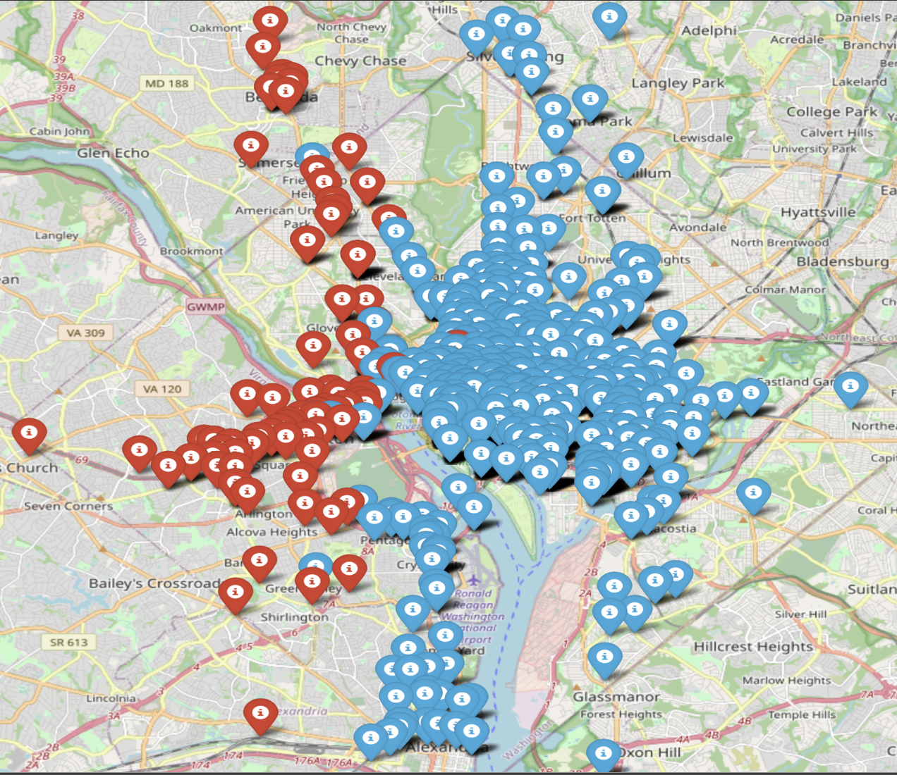

We notice that the demand for CaBi stayed relatively similar across 2016 to 2019. The drop in demand in 2020 is a cause of the COVID-19 pandemic and the consequent lockdown imposed. However,
the key finding here is that post-covid demand levels have not yet caught up to pre-covid demand!

On the other hand, there are some positive signs when it comes to membership growth.The fact that CaBi had the highest number of members in 2020 signifies that the number of casual riders, mainly tourists and folks residing in D.C for a few months at maximum, declined significantly due to the imposed lockdown. As a result of the lockdown, we notice a drop in members from 2020 to 2021 by almost 25%! Therefore, the pandemic indubitably affected CaBi’s revenues and has now put them in a period of recovery.
The most evident thing from Figure 1 is that all of these variables have gone through drastic changes
over the years. However, the more interesting thing to note from this graph is the period where trends
shifted from one state to the other.

In terms of ride distribution per hour of the day, the above figure highlights that there is relatively no activity on CaBi bikes amongst members and casual riders at 3AM and 4AM across the years 2016 to 2022. However, at 8AM we see a spike in rides started for members and not for casual riders, implying
that members mainly commute for work using CaBi. Another peak is seen at 5PM, this time for both members and casual riders, which denotes that members mainly commute from their workplaces back home but casual riders set off for a leisurely trip, reinforcing our observation from Figure 6 that casual riders comprise mainly tourists.

The ridge plot above helps us visualize the distribution of the number of rides started over a day across all years and members in our data. At 5AM, there is relatively no
activity for CaBi, but once the clock strikes 6AM and riders start their day, the activity increases gradually until it reaches a peak at 8AM. Due to work hours, activity is low from 9AM to 4PM, but we see even greater activity at 5PM and 6PM as riders leave their workplaces. Activity after 6PM starts reducing gradually and the cycle begins again at 6AM the next day.
Instrumentalness of songs seems to be the least volatile among those features, but it also showcased a significant change in the 90s.

The Folium package in Python helped us generate the geospatial visualizations because our data contained latitude and longitude features for start as well as end dates of each trip. Therefore, we created a function that takes in the station address as a string and outputs a heatmap of stations where rides ended. From Figure 13 above, most trips ended around the Rosslyn Metro Station and Dupont Circle, indicating that the Georgetown community uses CaBi as a substitute for the Georgetown University Transportation Shuttle. Moreover, 8000 trips, including 5500 members and 2500 casual riders, were started from 37th & O St NW across 2016-2022.

Finally, since our dataset has more than 700 stations, using station ID was avoided as including it in statistical and machine learning models as a categorical variable would be very hectic and would probably require supercomputers. Consequently, we opted to cluster the stations into 2 separate groups that we would eventually be used as a variable in the machine learning part of this project, reducing the number of variables from 700 (total stations) to 2 (clusters).
K-means clustering was used since it is the most popular clustering algorithm and fits the problem well. The results can be visualized in the above image.
The algorithm’s performance is near perfect, as there is no visible overlap between the two clusters and all stations are assigned to a cluster in a visually logical manner. The red cluster
is representative of bike stations in Georgetown, Chevy Chase (Maryland), and Arlington (Virgina) and the blue cluster is representative of bike stations in both Washington D.C, bordering the states of Maryland and Virginia, and the vicinity of Ronald Reagan Washington
National Airport (Virginia). This has now helped us factor in the location of each station through the resulting labels of the clustering models.